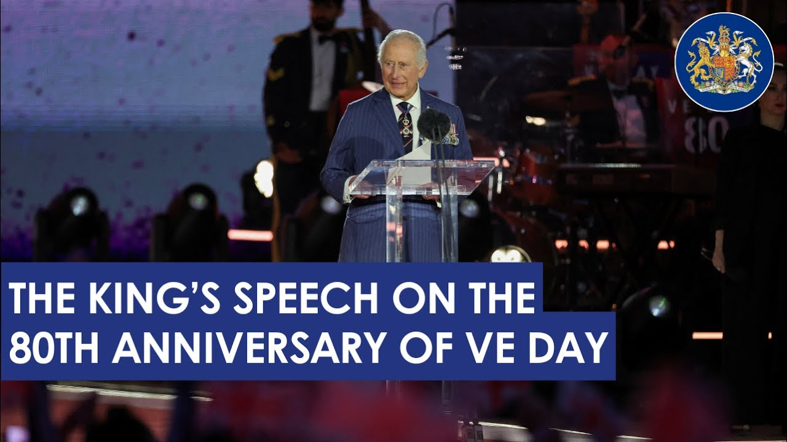

【国王在第二次世界大战欧洲胜利日80周年纪念活动上的讲话】
Summary: The King reflects on the 80th anniversary of VE Day, honoring the sacrifices of the wartime generation and emphasizing the importance of unity, remembrance, and the pursuit of lasting peace.
摘要： 国王在二战欧洲胜利日80周年之际，缅怀战时一代的牺牲，强调团结、纪念和追求持久和平的重要性。

⏱️ Estimated Reading Time: 7 min
[Applause] [Music] [Applause] Heat. Heat.
[掌声] [音乐] [掌声] 热。热。
Ladies and gentlemen, it is now 80 years since my grandfather, King George V 6, announced to the nation and the Commonwealth that the dreadful shadow of war has passed from our hearths and our homes.
女士们、先生们，80年前，我的祖父乔治六世国王向全国和英联邦宣布，战争的可怕阴影已从我们的家园消散。
The liberation of Europe was secured.
欧洲的解放得以实现。
His words echoed down through history as all this week and especially today, we unite to celebrate and remember with an unwavering and heartfelt gratitude the service and sacrifice of the wartime generation who made that hard-fought victory possible.
他的话语在历史中回响，本周乃至今日，我们团结一致，以坚定而真挚的感激之情，纪念和颂扬战时一代的奉献与牺牲，正是他们铸就了这一来之不易的胜利。
While our greatest debt is owed to all those who paid the ultimate price, we should never forget how the war changed the lives of virtually everyone.
我们最深的感激属于那些付出生命代价的人们，但我们也绝不能忘记战争如何改变了几乎每个人的生活。
Now as then, we are united in giving utmost thanks to all those who served in the armed forces, the uniformed services, the home front.
如今与当时一样，我们团结一致，向所有服役于军队、制服部队和后方的人们致以最深切的感谢。
Indeed, all the people of this country, the Commonwealth and beyond, whose firm resolve and fortitude helped destroy Nazism and carry our allied nations through to V day.
事实上，还有这个国家、英联邦乃至更广大地区的人民，他们的坚定决心与坚韧意志帮助摧毁了纳粹主义，并带领盟国走向胜利日。
That debt can never truly be repaid, but we can and we will remember them.
这份恩情永远无法真正偿还，但我们可以且必将铭记他们。
Over the course of the last year, there have been 80th anniversaries across Europe, from the hills of Monty Casino to the lower Rine at Arnham.
过去一年中，欧洲各地举行了80周年纪念活动，从蒙特卡西诺的山丘到阿纳姆的下莱茵河。
Last June, my wife and I were profoundly moved to join veterans of D-Day at the new National Memorial overlooking Gold Beach as they returned to honor their comrades who never came home.
去年六月，我和妻子深受感动，与诺曼底登陆的老兵们一同在新落成的国家纪念碑前俯瞰黄金海滩，他们重返故地，纪念那些未能归来的战友。
In January, as the world marked the liberation of Ashvitz, I met survivors whose stories of unspeakable horror were the most vivid reminder of why victory in Europe truly was the triumph of good over evil.
一月，当世界纪念奥斯维辛解放时，我遇见了幸存者，他们难以言表的恐怖经历最生动地提醒我们，为何欧洲的胜利确实是正义战胜邪恶的胜利。
All these moments and more combined to lead us to this day when we recall both those darkest days and the great jubilation when the threat of death and destruction was finally lifted from our shores.
所有这些时刻汇聚成今天，我们既回忆起那些最黑暗的日子，也想起死亡与毁灭的威胁最终从我们的海岸消散时的巨大欢欣。
The celebration that evening was marked by my own late mother, who just 19 years old, described in her diary how she mingled anonymously in the crowds across central London and in her own words walked for miles among them.
那晚的庆祝活动由我已故的母亲记录，当时年仅19岁的她在日记中描述了自己如何匿名融入伦敦市中心的人群，用她的话说，她与他们一起走了数英里。
The rejoicing continued into the next day when she wrote out in the crowd again.
欢庆持续到第二天，她再次写道自己置身于人群中。
Embankment piccadilly rained so fewer people.
河堤和皮卡迪利下雨了，所以人少了一些。
Congered into house sang till 2:00 a.m. Bed at 3:00 a.m.
挤进房子里唱歌直到凌晨两点。凌晨三点上床睡觉。
Ladies and gentlemen, I do hope your celebrations tonight are almost as joyful.
女士们、先生们，我衷心希望你们今晚的庆祝活动同样欢乐。
Although I rather doubt I shall have the energy to sing until 2:00 a.m., let alone for that matter to lead you all in a giant conga from here back to Buckingham Palace.
尽管我很怀疑自己是否有精力唱歌到凌晨两点，更不用说带领你们从这里跳康加舞回到白金汉宫了。
The Allied victory being celebrated then as now was a result of unity between nations, races, religions, and ideologies.
当时与现在庆祝的盟军胜利，是国家、种族、宗教和意识形态之间团结的结果。
Fighting back against an existential threat to humanity.
共同抗击对人类生存的威胁。
Their collective endeavor remains a powerful reminder of what can be achieved when countries stand together in the face of tyranny.
他们的集体努力仍有力地提醒我们，当国家团结一致面对暴政时，可以取得怎样的成就。
But even as we rejoice again today, we must also remember those who are still fighting, still living with conflict and starvation on the other side of the world.
但即使今天我们再次欢庆，也必须记住那些仍在战斗、仍在世界另一端忍受冲突与饥饿的人们。
For them, peace would not come until months later with VJ day, victory in the Pacific, which my father witnessed at firsthand from the deck of his destroyer HMS Welp.
对他们而言，和平要等到数月后的对日战争胜利日才到来，我的父亲曾在他的驱逐舰“威尔普”号甲板上亲眼见证了太平洋的胜利。
So in remembering the past, we must also look to the future.
因此，在铭记过去的同时，我们也必须展望未来。
As the number of those who lived through the Second World War so sadly dwindles, the more it becomes our duty to carry their stories forward, to ensure their experiences are never to be forgotten.
随着二战亲历者的数量令人遗憾地减少，我们更有责任传承他们的故事，确保他们的经历永不遗忘。
We must listen, learn, and share just as communities across the nation have been doing this week at local street parties, religious services, and countless small acts of remembrance and celebration.
我们必须倾听、学习并分享，正如全国各地的社区本周在街头聚会、宗教仪式和无数纪念与庆祝的小型活动中所做的那样。
And as we reach the conclusion of the 80th anniversary commemorations, we should remind ourselves of the words of our great wartime leader, Sir Winston Churchill, who said, "Meeting jaw to jaw is better than war."
随着80周年纪念活动接近尾声，我们应铭记伟大战时领袖温斯顿·丘吉尔爵士的话：“以谈判代替战争。”
In so doing, we should also rededicate ourselves not only to the cause of freedom, but to renewing global commitments, to restoring a just peace where there is war, to diplomacy, and to the prevention of conflict.
在此过程中，我们还应重新致力于自由事业，并重申全球承诺，在战争之地恢复公正和平，推动外交，预防冲突。
For as my grandfather put it, we shall have failed and the blood of our dearest will have flowed in vain if the victory which they died to win does not lead to a lasting peace founded on justice and established in good will.
正如我的祖父所言，如果他们为之牺牲的胜利未能带来建立在正义与善意基础上的持久和平，那我们就失败了，至亲的鲜血也将白流。
Just as those exceptional men and women fulfilled their duty to each other, to humankind, and to God, bound by an unshakable commitment to nation and service.
正如那些杰出的男女履行了对彼此、对人类和对上帝的职责，以对国家与服务的坚定承诺为纽带。
In turn, it falls to us to protect and continue their precious legacy.
而今，保护并延续他们珍贵遗产的责任落在了我们肩上。
So that one day hence, generations yet unborn may say of us, they too bequeathed a better world.
如此，未来的世代或许会这样评价我们：他们也留下了一个更美好的世界。